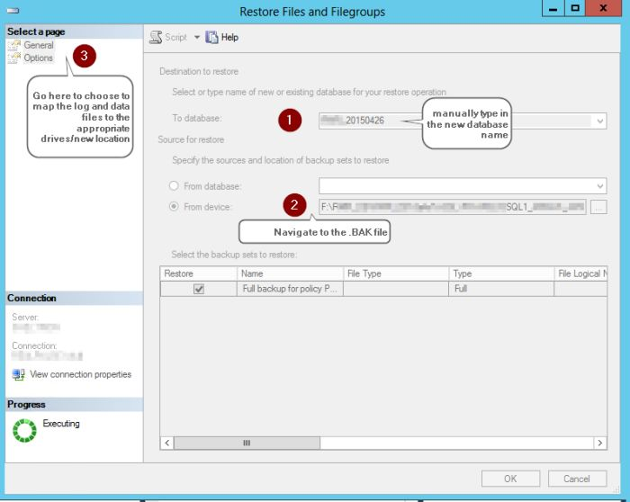
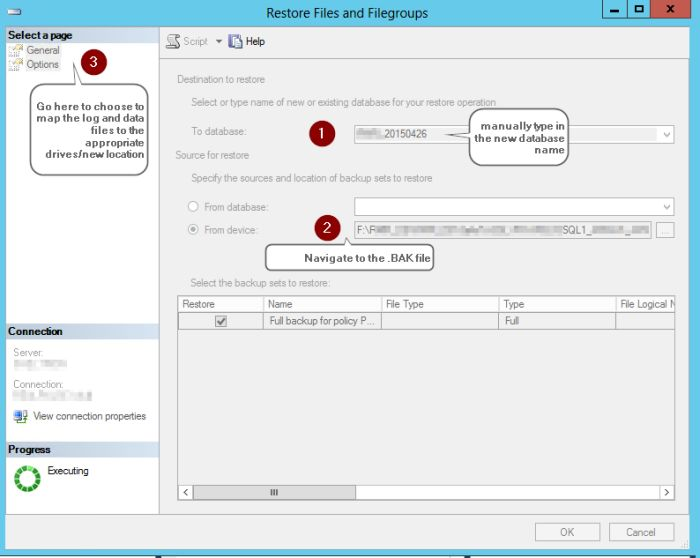
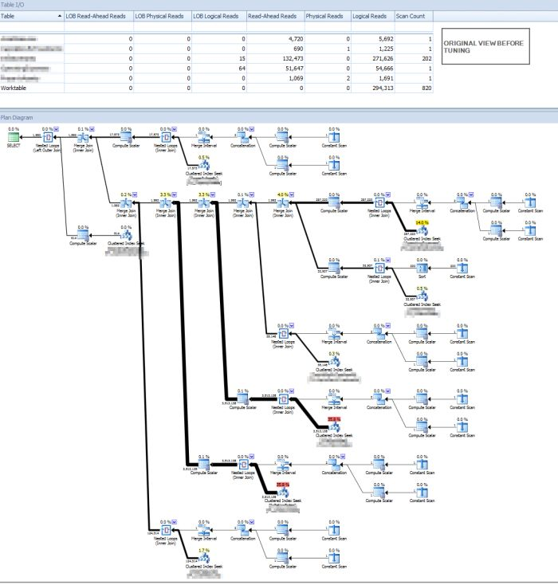
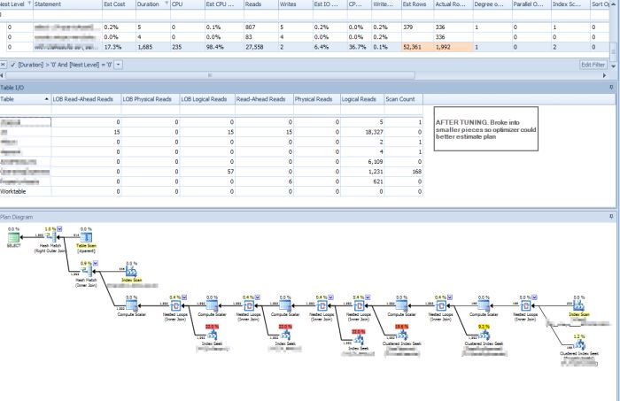
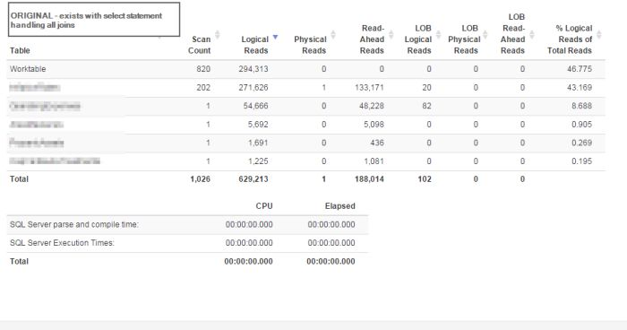
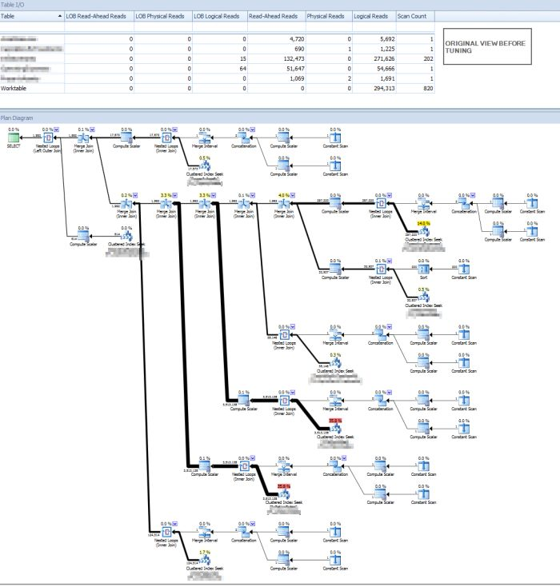
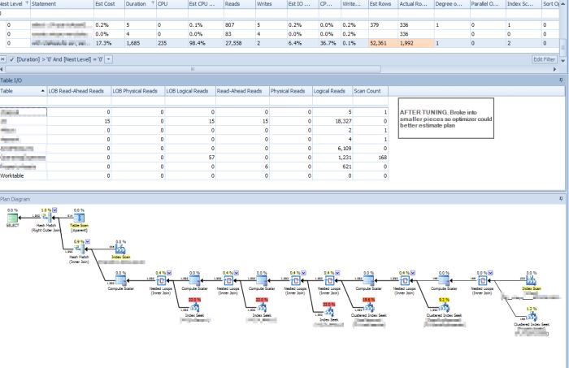
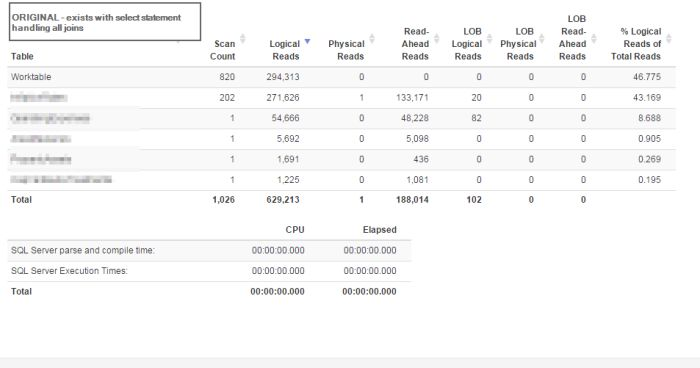

Why does this not have more recognition? In the experimentation of various file management and launching apps, I've tried several (Launchy, Listary, etc), but none have offered the speed and customization of Find and Run Robot. This app is a life saver for the power user! Here is an example of how you can have a hotkey to immediately launch a customized google search. The group alias gives you extensibility to filter the text you are typing to identify this alias of "Google Me" as the result to use since we typed ? as the first part of the string (that is the anchor ^).
Note the encoding is handled by $$u1 for the websearch, automatically correctly encoding spaces, semicolons, and other characters.
Here's the final result of what you'd start typing.
The cool part about this is the ability to not only match the initial regex, but also to filter inside this pattern to provide lists of options inside our match. In this example, I wanted to list favorite website by typing "G" at the beginning of the string followed by the keyword to filter my websites. This can be accomplished by anchoring the beginning of the regex filter to ^g, then filtering with the $$1.

Here is the initial filtered match based only on "G"

And finally the magic happens when the letters after "g" are parsed to get the website I want. This allows one to launch favorite websites easily, and you could even customize the url or more based on what regex magic you work!
All of these concepts apply to launching favorite apps and more. FARR2 has more customization than apps like launchy, symenu, and more, as it allows one to easily tweak the search "score" and add bonus points to items matching common folders or file types such as exe, xlsx, and more. Score model is pretty amazing.
Example of customized options to boost certain valuable matches in search results.

Finally, the killer feature for those fans of Everything search tool (Void) is the integration of the Everything search engine as an option to quickly search your entire computer in millseconds. You can easily setup a search filter with a space at the beginning so that all you have to do is type space and your search phrase and it will switch over to using the plugin search engine.

Why does this tool not get more recognization! What a life saver as you search through sql files, projects, and docs! Hope this helped point you in the direction of an amazing tool... post a comment if you try it out and tell me what you think! Find and Run Robot Help Find and Run Robot Download
 
Another option I found interesting was the support for loading database hosted on a fileshare. Brentozar has an article on hosting databases on a NAS that I found interesting. I haven't tried it yet, but think it has a great usage case for dealing with various databases loaded from clients. If you haven't read any material by him... then my question is why are you reading mine? His whole team is da bombiggity.... stop reading my stuff and head on over there!

Another option I found interesting was the support for loading database hosted on a fileshare. Brentozar has an article on hosting databases on a NAS that I found interesting. I haven't tried it yet, but think it has a great usage case for dealing with various databases loaded from clients. If you haven't read any material by him... then my question is why are you reading mine? His whole team is da bombiggity.... stop reading my stuff and head on over there! 




